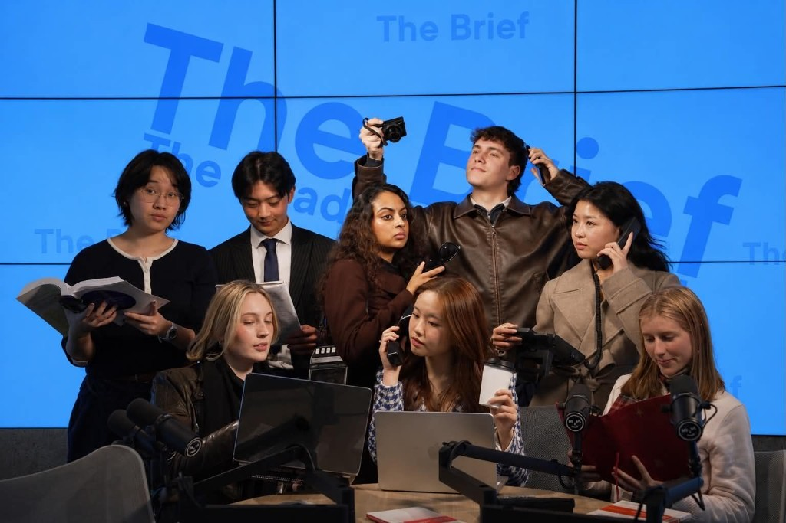
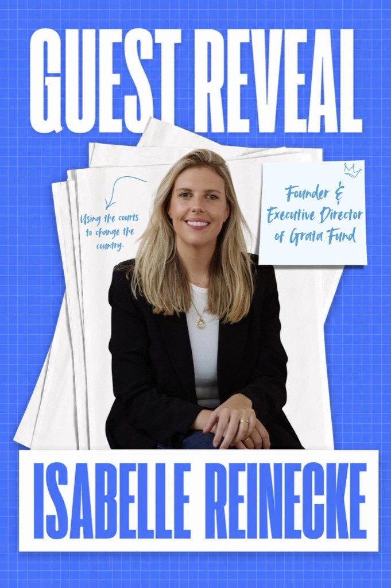
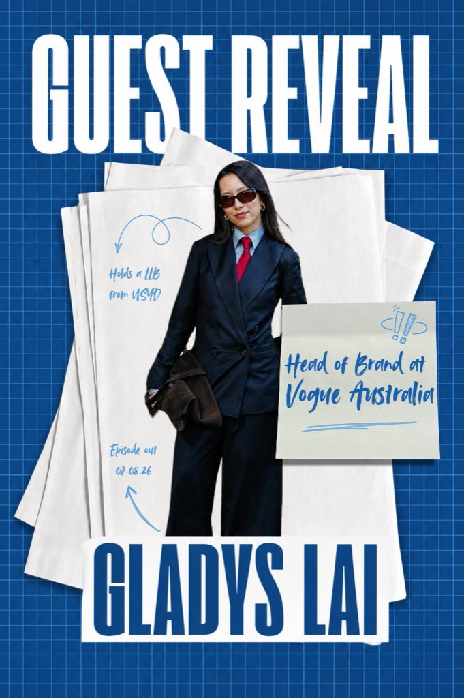
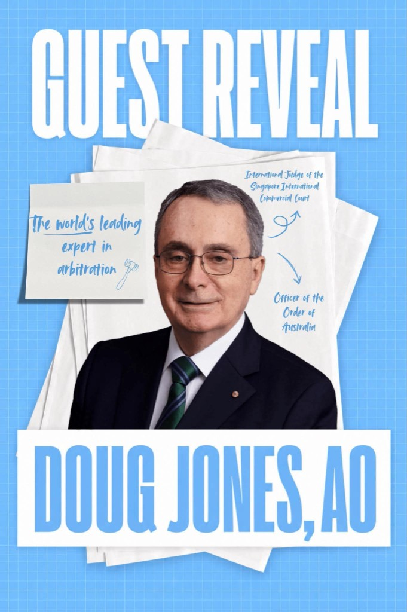

The Brief on …
Placeholder episode card. Replace with Episode 0 artwork, title and description when ready.
Additional paragraph for the featured layout. Keep or replace as needed.
“Quote line one, quote line two.”

The Brief is Sydney University Law Society’s flagship careers podcast dedicated to exploring non-traditional legal pathways. Each episode, we spotlight the incredible story of a guest who reflects on and shares their own experiences navigating a career within, outside or adjacent to law.
Join us weekly to travel down the road less litigated. Episodes drop at 10am every Friday on Spotify.

This short film encapsulates our podcast's vision, celebrating the multiple paths that diverge from the crossroads of finishing law school and all the roads that are less litigated.
Credits:
Placeholder episode card. Replace with Episode 0 artwork, title and description when ready.
Additional paragraph for the featured layout. Keep or replace as needed.
“Quote line one, quote line two.”

Isabelle Reinecke reflects on founding Grata Fund and leading strategic litigation to advance human rights, climate action and democratic freedoms across Australia, and how purpose-driven leadership can use the law as a tool for lasting social change.

Gladys Lai reflects on her path from a BA/LLB at USYD to Head of Brand at Vogue Australia, and how backing an unconventional route shaped a career driven by curiosity, creativity and courage.

Professor Doug Jones reflects on his path through law school, the decisions that shaped his future, and how he discovered a passion for a field that would ultimately take him around the world.
For any questions about The Brief, guest suggestions, or to be featured on the podcast, please contact us at podcast@suls.org.au.
Follow us on Instagram at @suls_thebrief.
See more of our work on LinkedIn.